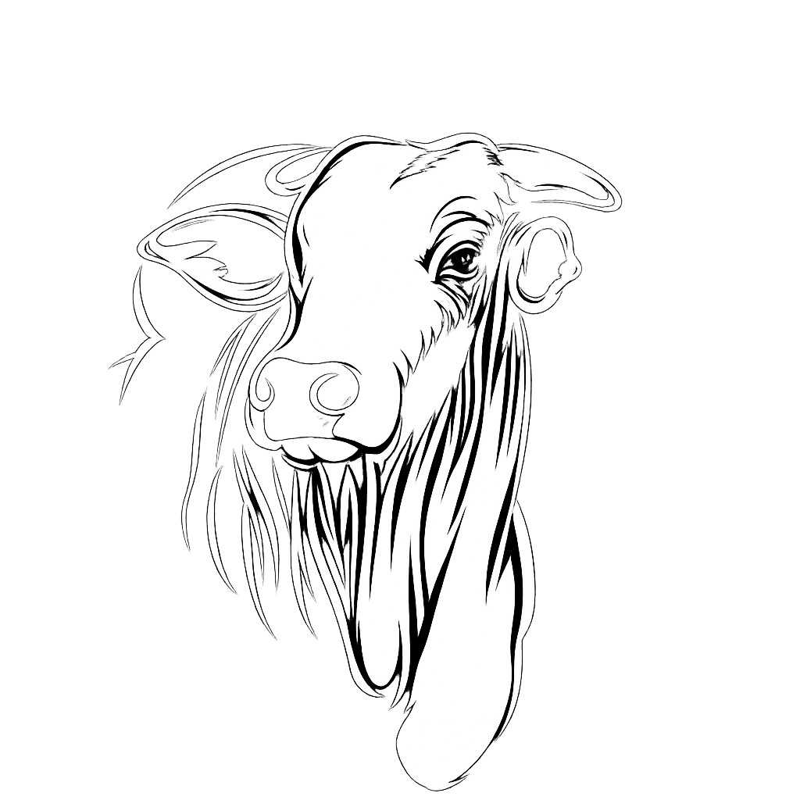

CAR
O registro ambiental da sua propriedade. Nós fazemos para você.
Pedir o CARpelo WhatsApp
Espaço do mascote bettaO registro ambiental da sua propriedade. Nós fazemos para você.
Pedir o CARpelo WhatsAppO documento da sua terra no INCRA. Emitimos e atualizamos para você.
Pedir o CCIRpelo WhatsAppO imposto da propriedade rural. Fazemos a declaração para você.
Pedir o ITRpelo WhatsAppO desenho da sua terra, com medidas e limites. Fazemos para você.
Pedir a Plantapelo WhatsAppO texto que descreve os limites da sua terra. Fazemos para você.
Pedir o Memorialpelo WhatsAppSem problema. Fale com a gente e explicamos com calma.
Falar com a gentepelo WhatsApp